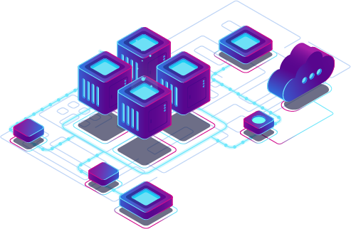
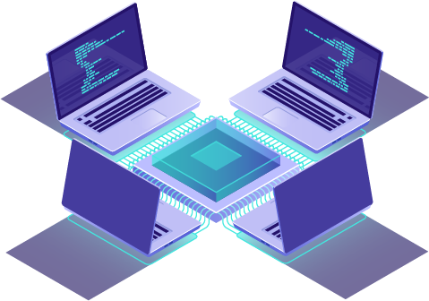

How did we built the Novalex Decentralized Exchange
Nova Dex is a decentralized exchange protocol based on the Ethereum 2.0 blockchain infrastructure that is integrated as a package into the core of the consensus layer. Although most decentralized exchanges uses smart contracts to help execute transaction, some maintains the use of centralized databases to store all transaction history. Therefore, these exchanges lacks a fully decentralized protocol which implies that they are actually hybrid exchanges.
Nova Dex bypasses this restriction by allowing any master node (out of many masternodes) to handle any transactions on a consensus basis, hence creating a decentralized paradigm. Using our decentralized architecture, our partners or other relayers can utilize our blockchain solution without worrying about the underlying decentralized protocol.
To build this decentralized protocol, we need to solve these problems
1. Integrated DEX as blockchain-core layer.
2. The matching engine and orderbook will need to be decentralized.
3. Relayer scaffolding as thin client.
Integrated DEX as blockchain-core layer
- We build NOVA DEX as a standard Ethereum protocol. Ethereum is composed of
many protocol packages. The
most important one is “eth” protocol which includes 2 main packages (modules):
- “Downloader“ mainly used to synchronize the network, including traditional and fast way.
- “Fetcher” which is used for block-based notification synchronization.
- We build our own protocol to integrate the DEX into the core layer although all data are actually stored as level db file, and synchronized based on “p2p” protocol across the multiple nodes. Nova DEX also uses “p2p” protocol to synchronize all messages.


The matching engine and orderbook need to be decentralized
- To decentralize the orderbook and matching engine, we need solve 2
problems:
- Orderbook as decentralized storage.
- Matching engine as decentralized logic.
- Firstly, we need to utilize the “eth” protocol to decentralize the orderbook. Since the order book is actually a red-black tree, we do this by building the order book as a single key-value pair “eth’ database, then synchronize it over the “p2p’ protocol.
- Using a cryptographic hash function, we can achieve a single key-value by calculating keccak256(pairName), such as keccak256(NOVA-ETH) as the starting slot position. decentralization.
- And all the following orders will be stored in ascending order using slot + incremental number. Since each order book is a red-black tree, by using the cryptographic hash technique, we can store all order books into a single key-value “eth” database to achieve decentralization.
Relayer scaffolding as thin client
- Relayer is actually a thin client (of any connected entity) who facilitates their users to participate (buy/sell, make/take) in the decentralized exchange. This concept is similar to a DApp on the Ethereum blockchain where all data will be retrieved from the blockchain.
- Each entity will have advantages of its local relationship, UX experimentation, and the simplicity of a one command set up. Eventually, they can modify the details and interface to meet the demands of their individual markets.
- To provide assistance to our relayers, we build a relayer starter kit which includes frontend + backend functionality (including utilities) built into a single docker image. This greatly simplifies the criteria and technicality required of our relayers making it more accessible to the public.
